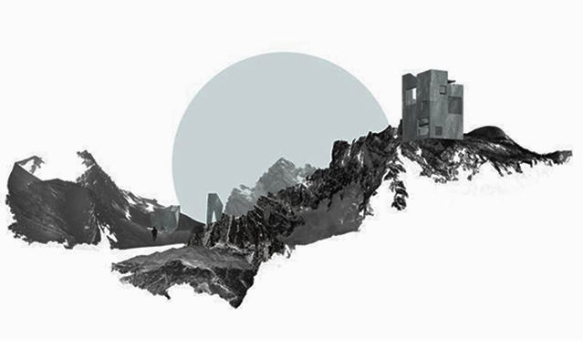
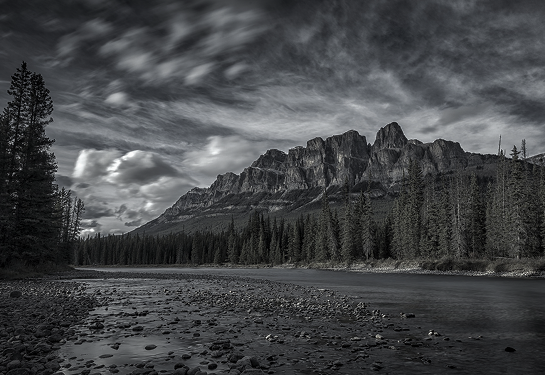

Where the Sky Begins
MORE
About US
We are a team of mountain lovers for whom travel is not just a hobby — it's a way of life.
Packing our backpacks and heading for the peaks, we realized: the beauty of the mountains is something we feel compelled to share.
On this website, we've gathered the best routes, time-tested tips, inspiring stories, and photos that breathe the freshness of alpine meadows and the quiet stillness of high mountain passes.

Catalog
Our catalog features tried-and-true routes — from easy walks along scenic trails to multi-day ascents with tents and glaciers. Each route comes with a detailed description, difficulty level, GPS track, gear recommendations, and photos that capture the spirit of the journey. You can sort routes by region, duration, altitude, season, and skill level.
MORE